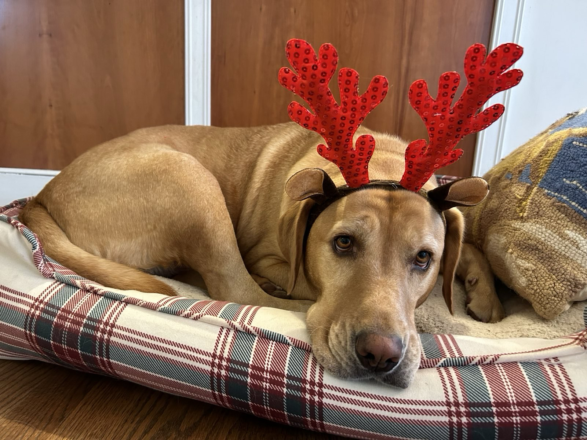

<div class="textcontainer">
<h3 align="center"><b>About Me</b></h3>
<p class="margin"> </p>
<div class="center-row">
<p id="aboutme" align="right">
Name...........................................................>> <b>Eli Kirtley</b><br>
Year.......................................................................>> <b>Senior</b><br>
House.................................................................>> <b>Quincy</b><br>
Concentration.................>> <b>Applied Mathematics</b><br>
Hometown.....................................>> <b>Centreville, VA</b>
</p>
<img src="./about_me_picture.png" alt="me", width = 300, border="5px">
</div>
<p></p>
<div align="left">
Hi! I'm a senior at Harvard studying Applied Mathematics. I generally really enjoy creating things, from ceramic mugs in the pottery studio,
to house music tracks on Ableton, to woodworking projects in my backyard at home. I also have a dog:<p></p>
<div class="flexrow"></div><p></p>
A lot of my interests are centered around music. I grew up playing a lot of piano and some violin &mdash; during college I've rediscovered my
love for music, and picked up music production as a casual hobby (check out my <a href="https://soundcloud.com/elijak">Soundcloud!</a>), mostly
working on house/electronic tracks. I'm always looking for new music &mdash; current favorites are Gorillaz, Aphex Twin, and various jazz artists
like Oscar Peterson and Bill Evans.
<p></p>
<b>Why I'm Excited To Take PS 70</b>
<p></p>
In high school, I took a prototyping class, where I learned
the ins and outs of the wood shop and spent a lot of time at the table saw, lathe, and other high-power tools. Our school also had a waterjet,
CNC mill, and multiple 3D printers. All of this exposed me to the joys of building, and I came out of that class having made a few cool wood
projects. I decided to take PS 70 in part due to the influence of this high school class &mdash; I want to build some really cool stuff this semester,
that involves not just basic wooden structures but other materials like polycarbonate, acrylic, metal, glass, etc. Incorporating circuitry with
Raspberry Pi / Arduino makes the project ideas even more exciting. I am heavily influenced by beautiful wooden artworks like Japanese lacquer-wood
boxes or really nice wooden tables. I've always been keen on the intersection between design, aesthetics, and function, and want to produce a project
that incorporates a healthy balance of those features. Music is also a huge interest of mine (broadly speaking) and I think it would be cool to
tie that in to the final project as well.
</div>
<br></br>
</div>